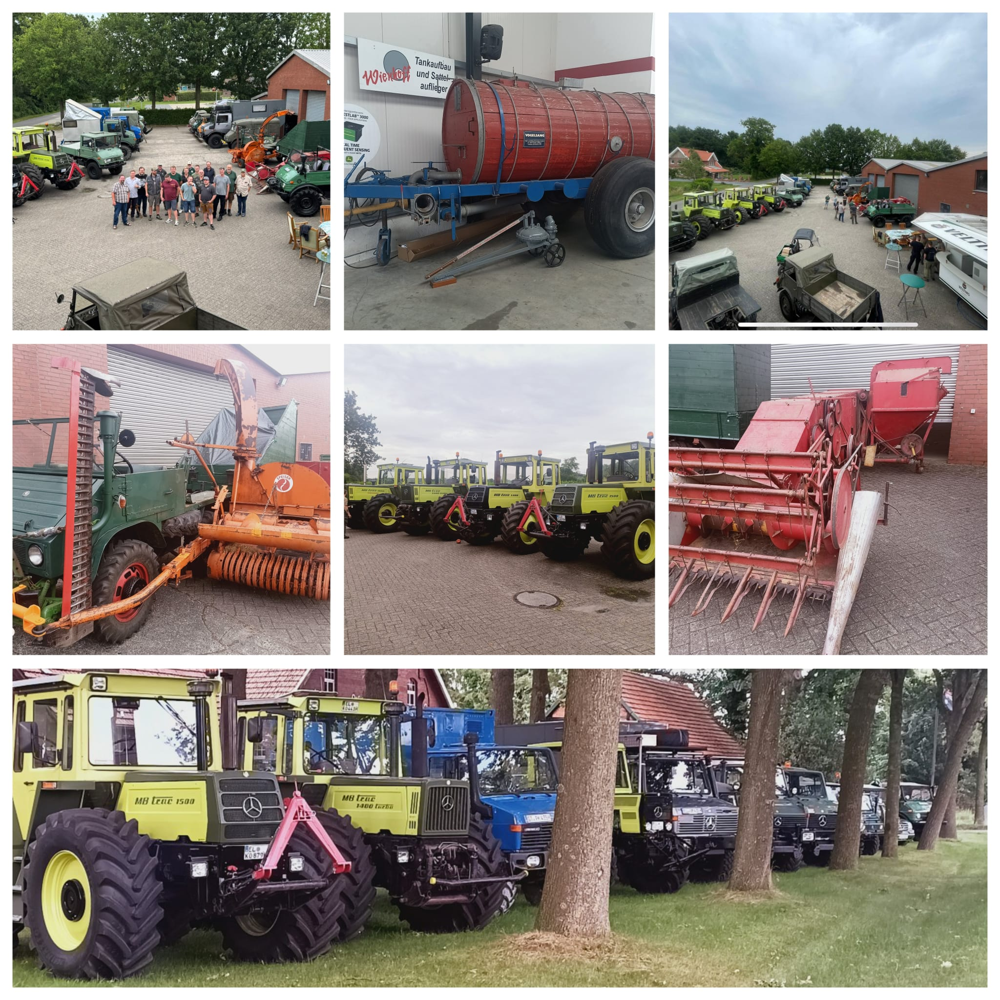

Eine Gruppe startete am Nachmittag im Konvoi von Versmold und legte dabei rund 99 km zurück. Nach der Ankunft auf dem Hof von Reinhold Hense wurden die Teilnehmer herzlich begrüßt.
Am Abend stand der Besuch eines privaten Nutzfahrzeugmuseums auf dem Programm – inklusive einer urigen Kneipe, einer alten Zollstation und historischen Bereichen wie einem Pferdewechsel. Die Sammlung bot zahlreiche restaurierte und technisch instand gesetzte Fahrzeuge sowie viele Exponate mit ehrlicher Patina.
Nach einem gemeinsamen Frühstück startete die Ausfahrt durch das südliche Emsland. Die Route führte zunächst über Barwinkel zur Firma Wienhoff, wo eine interessante Besichtigung stattfand.
Anschließend ging es weiter nach Börstel, wo in der Stiftsschänke Börstel ein gemeinsames Mittagessen stattfand. Danach führte die Strecke zurück nach Baccum, wo der Nachmittag in geselliger Runde ausklang.
Am Sonntagmorgen wurde nach dem Frühstück die Heimreise angetreten. Eine Gruppe fuhr erneut im Konvoi zurück nach Versmold. Damit endete ein rundum gelungenes Treffen mit vielen Eindrücken, Gesprächen und schönen Momenten.
Die folgende Collage zeigt einige Eindrücke vom Unimog-Treffen 2025 in Baccum:
